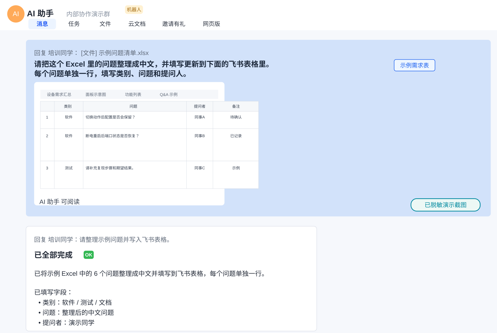

1. AI 提效的关键：把工作交付给 AI
推荐开场旧用法：问 AI
- 问一个概念，得到一段解释
- 临时让 AI 写几句话
- 结果还要自己重新整理
- 效果取决于个人会不会写提示词
新用法：管理 AI
- 给 AI 一个明确任务
- 提供上下文、文件、格式和验收标准
- 让 AI 输出可复用的交付物
- 把好用流程沉淀成团队 SOP
2. Aily 与 Codex 怎么选
重点讲费用飞书 Aily
飞书原生协同 AI。适合个人在飞书聊天和文档中整理信息、提炼结论、快速形成可协作的初稿。
OpenAI Codex
个人工程任务 AI。适合处理日志、配置、代码、脚本和本地文件，把复杂分析变成可交付产物。
| 维度 | 飞书 Aily | Codex |
|---|---|---|
| 推荐定位 | 飞书内协同 AI，处理群聊、文档、知识库和流程信息。 | 个人工程 AI，处理日志、配置、代码、脚本和本地文件。 |
| 最大价值 | 原生飞书生态，可以无缝嵌入聊天和文档，适合个人处理协作现场的信息。 | 复杂分析和工程交付能力强，适合研发测试个人高频使用。 |
| 典型任务 | 群聊转 Bug 单、内部知识问答、飞书文档协同。 | 日志分析、配置生成/校验/翻译、脚本生成、代码辅助。 |
| 使用难度 | 普通员工使用门槛低；搭建知识库和权限需要负责人维护。 | 研发测试上手快；需要理解本地目录、文件和安全边界。 |
| 费用观感 | 如果按约 138 元/月级别采购，单看模型能力不占优势。 | 约 3000 日元/月级别时，作为个人研发提效工具性价比更高。 |
| 个人使用建议 | 适合经常在飞书群聊、文档中整理信息和对齐口径的同学。 | 适合经常处理日志、配置、脚本、代码和技术材料的同学。 |
3. 工具入口与课前准备
从这里开始飞书 Aily
使用方式：用公司飞书账号进入，也可以在飞书内搜索 Aily。适合处理群聊总结、文档问答、Bug 单整理等飞书生态内任务。
OpenAI Codex
入口：chatgpt.com/codex/get-started
使用方式：登录 ChatGPT 后进入 Codex，引导它读取本地工作目录，处理日志、配置、脚本、文档和页面交付。
腾讯元宝
使用方式：用于通用资料检索、非业务内容生成和轻量问答，减少主力工具的 token 消耗。
课前准备清单
演示材料Aily 准备
Codex 准备
ai-test-lab/ ├── logs/ ├── configs/ ├── scripts/ ├── outputs/ └── README.md
4. Aily 场景一：飞书群聊整理成 Bug 单
测试同学目标
让测试同学把飞书群里零散的问题讨论，快速整理成研发可复现的标准缺陷单。
价值
把“提 Bug 单”从 10 分钟变成 10 秒，减少研发反复追问信息。
在飞书群里选中相关讨论
选择包含问题现象、版本、设备型号、复现概率、日志线索的聊天记录。真实演示时建议使用脱敏模拟群聊。
实际案例：飞书机器人处理表格类任务
在飞书群里直接给机器人分配任务：读取一个 Excel 文件，把问题翻译成中文，并按要求回填到指定飞书表格。机器人完成后在群里回复结果摘要，适合展示“Aily/飞书生态 AI 能直接围绕群聊、文件和云文档协作”的价值。

让 Aily 生成标准缺陷单
请根据以上飞书群聊内容，整理成标准缺陷单。 要求包括： 1. 问题标题 2. 设备型号 3. 软件版本 4. 测试环境 5. 复现概率 6. 复现步骤 7. 预期结果 8. 实际结果 9. 日志线索 10. 缺失信息 11. 建议补充材料 如果群聊中没有的信息，请标记为“待补充”，不要编造。
人工补齐后提交缺陷系统
Aily 负责结构化信息，人负责确认事实、补齐日志、判断严重等级和影响范围。
5. Aily 场景二：内部知识入口
全体通用目标
打通飞书文档和 RAG 知识库，让同事直接问产品、流程、测试规范和售后案例。
价值
让“找资料”从 10 分钟变成 10 秒，减少群里重复问同样的问题。
建议接入
产品规格书、CLI 命令手册、测试规范、发布流程。
建议接入
缺陷等级定义、FAQ、售后案例库、型号差异说明。
建议接入
版本 release note、常见问题排查步骤、部门 SOP。
S5860 系列支持哪些 VLAN 相关能力？ 交换机版本发布前，系统测试准出标准是什么？ PoE 供电异常时，售后第一轮应该收集哪些信息？ 这个版本修复过哪些 LACP 相关问题？
6. Codex 场景一：设备日志分析助手
售后 / 测试目标
拿到一大段设备日志后，让 Codex 先完成结构化梳理，辅助第一轮问题定位。
价值
减少肉眼扫日志，把异常摘要、时间线、可能模块和下一步排查命令一次整理出来。
把脱敏日志放进本地目录
示例：logs/switch_issue.log。日志里不要包含客户名称、真实公网 IP、账号、密码、序列号等敏感信息。
给 Codex 明确分析目标
请分析 logs/switch_issue.log。 背景：客户反馈交换机端口偶发掉线。 请按以下格式输出： 1. 异常摘要 2. 按时间线整理关键事件 3. 可能相关的模块，例如端口、LACP、STP、PHY、CPU、内存、进程重启 4. 明确区分“日志事实”和“推测” 5. 建议下一步补充哪些 show 命令或现场信息 6. 给售后同事一版简洁说明 不要直接下最终根因结论，除非日志证据足够充分。
输出报告并人工确认
建议输出到 outputs/switch_issue_analysis.md。后续再把确认后的结论同步到飞书文档或缺陷单。
7. Codex 场景二：配置生成、校验、翻译
研发 / 测试 / 售后 / 售前配置生成
根据测试目标生成 VLAN、LACP、ACL、QoS、STP 等配置和验证命令。
配置校验
检查端口模式、VLAN 绑定、聚合组成员、规则顺序、遗漏项。
配置翻译
把客户现场配置或测试配置翻译成自然语言，便于复盘和沟通。
请为一台交换机生成 LACP + VLAN trunk 测试配置。 测试目标： - 创建 VLAN 10、20、30 - 端口 1/1-1/4 组成 LACP 聚合口 - 聚合口允许 VLAN 10、20、30 通过 - 提供验证命令 - 输出配置步骤和预期检查结果 如果不同厂商命令格式不同，请先按通用逻辑输出，并标记需要按实际 CLI 适配的地方。
请检查 configs/test_topology.cfg。 背景：这是一个 VLAN + LACP 测试拓扑配置。 请找出可能的： 1. 配置冲突 2. 遗漏项 3. 端口模式不一致 4. VLAN 未绑定 5. 聚合口成员异常 6. 可能影响业务转发的配置 输出格式：问题点、影响、建议修改方式、需要人工确认的信息。
请把 configs/customer_config.cfg 翻译成自然语言说明。 要求说明： 1. 配置了哪些 VLAN 2. 哪些端口是 access，哪些是 trunk 3. 哪些端口加入了聚合组 4. 管理地址是什么 5. 可能影响业务转发的关键配置有哪些 6. 哪些地方需要结合现场拓扑进一步确认
8. AI 使用安全红线
必须强调不要输入
- 客户名称、合同、报价、真实故障现场敏感信息
- 账号、密码、Token、License、私钥、证书
- 未公开产品规划、芯片信息、核心代码片段
- 真实公网 IP、序列号、远程访问方式
必须做到
- 上传前脱敏，输出后人工复核
- AI 生成脚本先在实验环境运行
- AI 结论区分事实、推测和待确认项
- 重要结论回到公司流程中评审确认
本目录只放脱敏测试材料。 不允许包含： - 账号、密码、Token、License、私钥、证书 - 客户名称、合同、报价、真实现场敏感信息 - 未公开产品规划、核心代码片段 - 真实公网 IP、序列号、远程访问方式 所有 AI 生成脚本必须人工检查后，再连接实验设备或真实设备。
9. 课后落地建议
从试点开始第一周
每位同学选 1 个 Aily 场景和 1 个 Codex 场景，先跑通自己的最小闭环。
第二周
记录省时效果、失败案例、提示词模板和安全问题，形成个人可复用模板。
第三周
把稳定场景沉淀成自己的 SOP，再和团队共享高价值模板。
10. 个人 AI 使用等级自评
课后自查| 等级 | 角色 | 一句话说明 | 典型工具 | 典型行为 |
|---|---|---|---|---|
| Level 1 | 工具体验者 | 把 AI 当搜索引擎，偶尔提问或生成简单内容。 | 元宝、ChatGPT | 问问题、写简单文案、做基础总结。 |
| Level 2 | Prompt 使用者 | 学会写更清晰的提示词，让 AI 输出更好的结果。 | 元宝、Aily、Codex | 设定角色、背景、输出格式和约束条件。 |
| Level 3 | AI 合作者 | 把 AI 当思考伙伴，通过多轮对话一起完成任务。 | Aily、Codex、元宝 | 头脑风暴、让 AI 批判观点、优化方案。 |
| Level 4 | 工作流设计者 | 把复杂任务拆成多个步骤，让 AI 参与整个流程。 | Aily、Codex | 群聊转 Bug 单、日志分析、配置校验、报告初稿。 |
| Level 5 | 自动化构建者 | 让 AI 生成脚本或自动化流程，执行部分重复任务。 | Codex | 批量采集信息、生成测试脚本、整理配置和日志。 |
| Level 6-8 | 系统/组织/生态建设者 | 建立自动运行系统、组织级 AI 流程或 AI 产品平台。 | 企业 AI 系统、Agent 平台、API 平台 | 组织流程重构、平台建设、AI 产品化。 |
我的日常组合
这三个工具配合使用，而不是互相替代：Aily 管飞书协作，Codex 做主力输出，元宝处理公开资料和轻量检索。
飞书 Aily
日常飞书生态：企业私有云部署，安全性高。处理群聊总结、文档问答、Bug 单整理等协作信息。建议使用免费额度即可。
Codex
主力输出：本地工作区运行，加密大模型点对点通信，安全性高。负责技术文档翻译、现场日志分析、邮件助理、需求洞察分析、文档制作和 App 页面交付等。建议使用 Plus 计划，20 美元/月，足够满足日常生产业务。
元宝
低成本检索：非部署，公开大模型，安全性低。用于通用资料检索、非业务内容生成和轻量问答，减少主力工具的 token 消耗。免费。